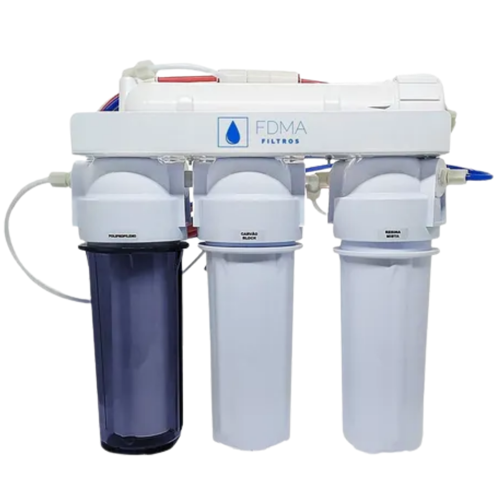

SEU FILTRO COM ÁGUA PURA, GELADA E SEGURA NA SUA CASA OU EMPRESA

Instalação de Filtros de Água para Bebedouros com Qualidade e Rapidez na Grande Vitória - ES.
Agendar InstalaçãoInstalação de Filtros de Água para Bebedouros com Qualidade e Rapidez na Grande Vitória - ES.
Agendar InstalaçãoNa SB-PRODUTOS - diskfiltro, acreditamos que um simples filtro pode transformar a qualidade da sua água — e da sua vida. Mais do que um serviço técnico, oferecemos um compromisso com a pureza, segurança e o bem-estar da sua família ou empresa.
Trabalhamos com filtros de alta performance, atendimento ágil e instalação profissional em toda a Grande Vitória – ES. Para garantir água realmente pura, a troca do filtro deve ser feita a cada 6 meses — e nós cuidamos para que você não precise se preocupar com isso. Enviamos lembretes e oferecemos suporte completo no tempo certo.
Filtro para bebedouro a partir de R$50,00. Consulte o profissional pelo WhatsApp para ficar por dentro de preços e instalação.

A troca regular do filtro é essencial para manter a qualidade da água que você consome. Recomendamos que a substituição seja feita a cada 6 meses, garantindo assim a eficiência da filtragem e a sua segurança.
Pensando nisso, a SB-PRODUTOS - diskfiltro oferece acompanhamento contínuo e lembretes automáticos para que você nunca precise se preocupar com prazos. Deixe com a gente!

Passando para dizer que o filtro é qualidade total com agua geladinha e o melhor é o atendimento educado e honesto

Com a troca do filtro que solicitei, alem do bom atendimento eu percebi que a água ficou mais saborosa e mais gelada.

Recomendo pelo atendimento, honestidade e pela água gelada que o filtro oferece todos os dias!

Atendemos toda a região da Grande Vitória — Espírito Santo. Nossa base está estrategicamente localizada para oferecer atendimento rápido e eficiente.